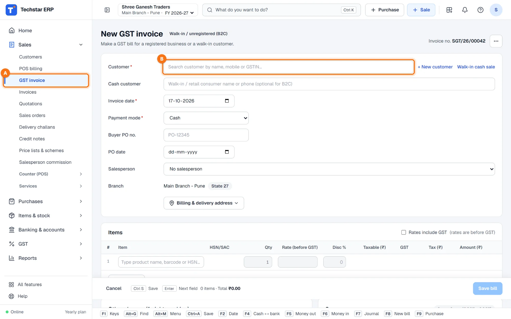
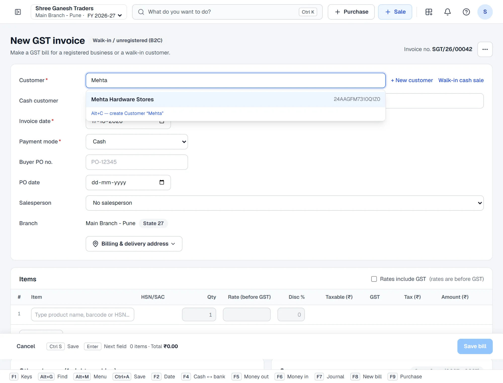
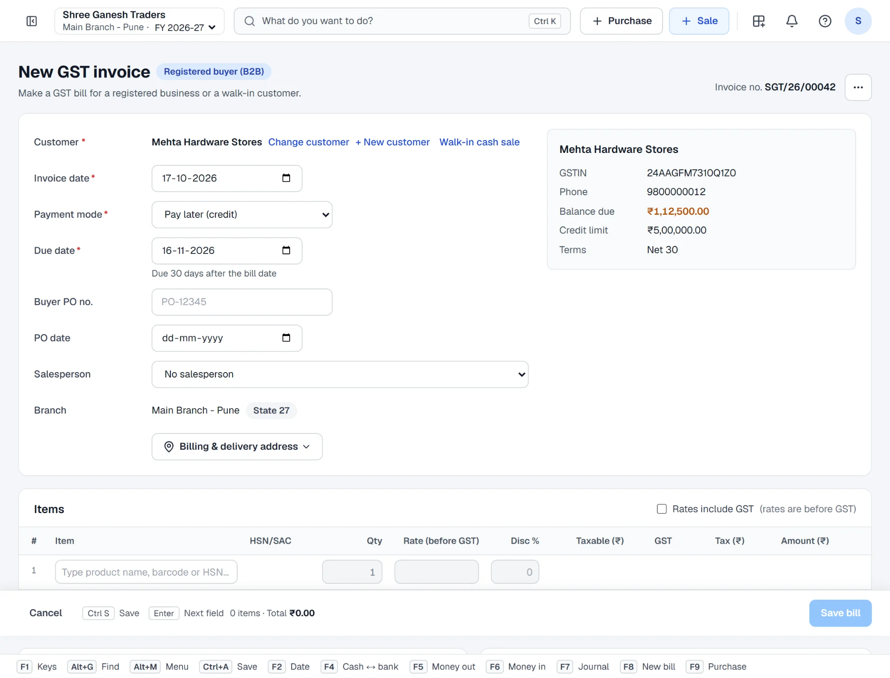
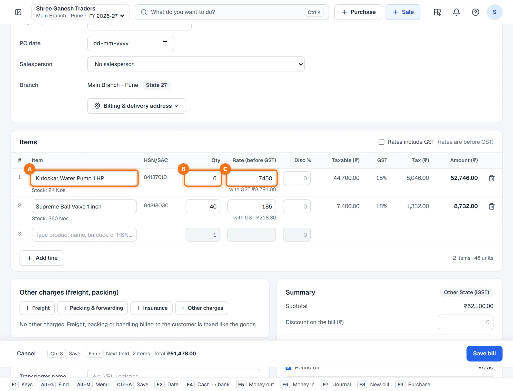
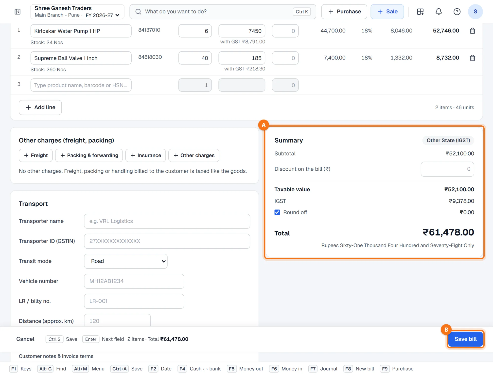
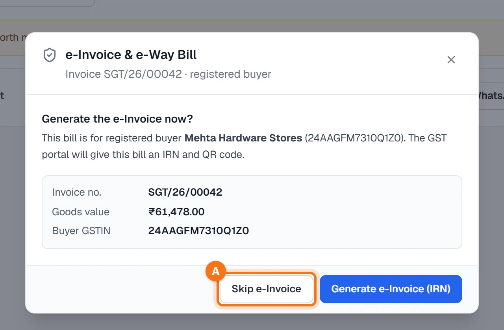
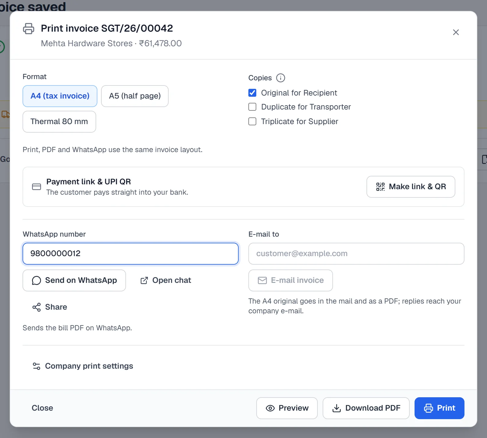
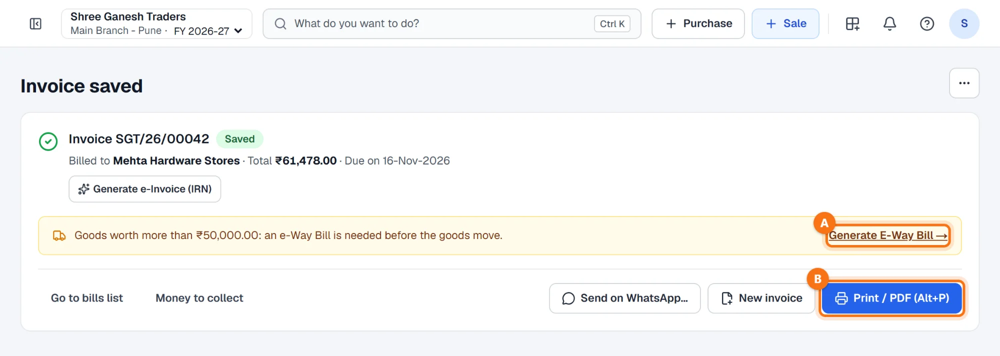

Techstar ERP मराठी आणि हिंदीतही वापरता येतो. वर उजवीकडे तुमच्या नावाच्या आद्याक्षराच्या गोल बटणावर click करा → Language (भाषा) → मराठी. ERP चा menu मराठीत दिसतो (उदा. Sales = विक्री). बिले आणि इतर कायदेशीर कागदपत्रे नेहमीप्रमाणेच छापली जातात. या guide मधले screenshots English menu चे आहेत.
सुरू करण्यापूर्वी
तुमचा व्यवसाय आणि शाखा सेट केलेली असावी (Settings → Business details & GST). इनव्हॉइस नंबर शाखेच्या invoice prefix वरून येतो — उदा. SGT/26/00042.
ग्राहक आणि आयटम आधीच टाकू शकता (Sales → Customers, Items & stock) किंवा बिल करताना इनव्हॉइस स्क्रीनवरूनच जोडू शकता.
नवीन GST इनव्हॉइस उघडा
डाव्या menu मध्ये Sales → GST invoice A वर click करा (मराठी menu मध्ये: विक्री → GST इनव्हॉइस). किंवा Ctrl + K दाबा, GST invoice टाइप करा आणि Enter दाबा.
तुमच्या शाखेचा पुढचा इनव्हॉइस नंबर वर उजवीकडे दिसतो. अंतिम नंबर save करताना server देतो, त्यामुळे नंबरच्या मालिकेत गॅप किंवा डुप्लिकेट येत नाही.

ग्राहक निवडा
Customer B मध्ये ग्राहकाच्या नावाची काही अक्षरे, मोबाईल नंबर किंवा GSTIN टाइप करा. बाणाच्या कीज (arrow keys) आणि Enter ने ग्राहक निवडा, किंवा त्यावर click करा.

उजवीकडे ग्राहकाची माहिती दिसते: GSTIN, फोन, बाकी रक्कम (balance due), क्रेडिट मर्यादा आणि पेमेंटच्या अटी. ग्राहकाकडे GSTIN असेल तर शीर्षकाजवळचा बॅज Registered buyer (B2B) होतो.

नवीन ग्राहक? + New customer वर click करा, किंवा शोध बॉक्समध्ये Alt + C दाबा — तुम्ही टाइप केलेले नाव तिथे येते. GSTIN टाकल्यावर पार्टीचे नाव आणि पत्ता आपोआप आणता येतो.
GSTIN नसलेला walk-in ग्राहक? Customer रिकामा ठेवा आणि Cash customer मध्ये नाव किंवा फोन टाका, किंवा Walk-in cash sale वर click करा. मग इनव्हॉइस B2C होते.
तारीख, पेमेंट पद्धत आणि देय तारीख तपासा
- Invoice date — आपोआप आजची तारीख. पुढची (भविष्यातील) तारीख टाकता येत नाही.
- Payment mode — Pay later (credit) (उधार), Cash (रोख) किंवा UPI / bank. नोंदणीकृत व्यवसाय किंवा उधारीचा ग्राहक असेल तर credit आपोआप निवडले जाते.
- Due date — ग्राहकाच्या अटींनुसार (उदा. 30 दिवस) मोजली जाते. वेगळे ठरले असेल तर बदला.
- हवे असल्यास: Buyer PO no., PO date आणि Salesperson. माल वेगळ्या पत्त्यावर (ship-to) जात असेल तर Billing & delivery address वापरा.
आयटम टाका
Item बॉक्समध्ये A आयटमचे नाव, बारकोड किंवा HSN टाइप करा आणि Enter दाबा. HSN कोड, GST दर, उपलब्ध स्टॉक आणि विक्री दर item master मधून येतात.
Qty B (नग) टाका. Rate (before GST) C आधीच भरलेला असतो — गरज असेल तर बदला, आणि ओळीवर सूट द्यायची असेल तर Disc % टाका. पुढच्या आयटमसाठी नवीन रिकामी ओळ आपोआप येते; + Add line वरही click करू शकता.

GST सकट किंमतीने (उदा. MRP) विकताय? आयटमच्या वर Rates include GST वर टिक करा — GST सकट किंमत टाका, GST आधीचा दर ERP स्वतः काढतो.
एकूण रक्कम तपासा आणि save करा
Summary A मध्ये subtotal, बिलावरची सूट, taxable value, GST आणि अक्षरी एकूण रक्कम दिसते. टॅक्सचा प्रकार ERP स्वतः निवडतो:
- Same State (CGST + SGST) — ग्राहक तुमच्या शाखेच्या राज्यातच आहे.
- Other State (IGST) — ग्राहक दुसऱ्या राज्यात आहे (उदाहरणात: पुणे ते सुरत).
बिलावर भाडे (freight), पॅकिंग किंवा विमा लावायचा आहे? Other charges वापरा — त्यांवर मालाप्रमाणेच GST लागतो. Transport विभाग (transporter, गाडी नंबर, LR नंबर, अंतर) ऐच्छिक आहे; तिथे भरलेली माहिती नंतर ई-वे बिलासाठी वापरली जाते.
Save bill B वर click करा किंवा Ctrl + S दाबा. काही राहिले असेल तर लाल Before saving, fix बॉक्समध्ये ते दिसते.

नोंदणीकृत ग्राहकासाठी ई-इनव्हॉइसची विचारणा
GSTIN असलेल्या ग्राहकासाठी ERP विचारतो: Generate the e-Invoice now?
- तुमच्या व्यवसायाला ई-इनव्हॉइस लागू असेल तर Generate e-Invoice (IRN) वर click करा. IRN आणि signed QR कोड ई-इनव्हॉइस पोर्टलवरून येतो आणि इनव्हॉइसवर छापला जातो. (त्यासाठी तुमचा e-Invoice API user एकदा GST → E-Invoice / E-Way Bill → GST Configuration मध्ये save केलेला असावा.)
- लागू नसेल तर Skip e-Invoice A वर click करा.

प्रिंट करा, PDF डाउनलोड करा किंवा WhatsApp वर पाठवा
त्यानंतर प्रिंटची विंडो उघडते (Print / PDF किंवा Alt + P ने कधीही उघडता येते). फॉरमॅट निवडा — A4 (tax invoice), A5 (अर्धे पान) किंवा Thermal 80 mm — आणि प्रती निवडा (Original for Recipient, Duplicate for Transporter, Triplicate for Supplier).
याच विंडोमधून पेमेंट लिंक आणि UPI QR बनवू शकता, PDF WhatsApp वर पाठवू शकता, ई-मेल करू शकता, किंवा Preview, Download PDF आणि Print वापरू शकता.

Save झाल्यानंतर
इनव्हॉइस save होते आणि त्याचा नंबर, ग्राहक, एकूण रक्कम आणि देय तारीख दिसते. इथून तुम्ही:
- Print / PDF (Alt+P) B, Send on WhatsApp… किंवा New invoice (नवीन इनव्हॉइस) करू शकता;
- आधी skip केले असेल तर नंतर ई-इनव्हॉइस (IRN) बनवू शकता;
- माल ई-वे बिलाच्या मर्यादेपेक्षा जास्त किमतीचा असेल तर पिवळ्या सूचनेतील A लिंक वापरा — पहा ई-वे बिल कसे बनवायचे;
- Go to bills list (Sales → Invoices) मधून बिल पुन्हा प्रिंट, परत (return) किंवा रद्द करू शकता, आणि Money to collect मध्ये ग्राहकांकडून येणे पाहू शकता.

Save केल्यावर आयटमचा स्टॉक कमी होतो, विक्री GST सह तुमच्या हिशोबात नोंदवली जाते आणि — उधारीच्या विक्रीत — ग्राहकाची बाकी वाढते.
कीबोर्ड शॉर्टकट
| कीज | काय होते |
|---|---|
| Enter | हायलाइट केलेला ग्राहक किंवा आयटम निवडा; पुढच्या field वर जा |
| Alt + C | शोध बॉक्समधून, टाइप केलेल्या नावाने नवीन ग्राहक बनवा |
| Ctrl + S | इनव्हॉइस save करा |
| Alt + P | Save केल्यानंतर प्रिंट / PDF |
| Ctrl + K | कोणतीही स्क्रीन शोधा (“What do you want to do?”) |
| F8 | काउंटरवर पटकन बिल (POS billing) |
नेहमीचे प्रश्न
माझ्या इनव्हॉइसवर CGST आणि SGST ऐवजी IGST का दिसतो?
GSTIN नसलेल्या ग्राहकाचे बिल करता येते का?
बनवलेली इनव्हॉइस कुठे सापडतील?
ग्राहक क्रेडिट मर्यादेच्या पुढे गेला आहे. काय होते?
भाडे किंवा पॅकिंग चार्ज लावता येतो का?
आणखी guides
Screenshots Techstar ERP मधील demo कंपनीचे आहेत (Shree Ganesh Traders, Pune). सर्व नावे, GSTIN, रकमा आणि कागदपत्रांचे नंबर नमुना माहिती आहेत.